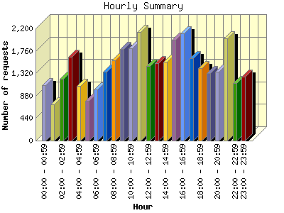
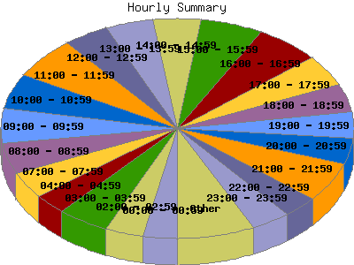

Report generated by Analog 6.0 and Report Magic 2.21
|
Web Server Statistics for "Harish Narayanan (hnarayan) - April 2008" Report generated by Analog 6.0 and Report Magic 2.21 |
The Hourly Summary identifies the level of activity broken down by each hour. Remember that one page hit can result in several server requests as the images for each page are loaded. This summary also compares the level of activity during working hours and after hours as a total for the report time frame.


| Hour | Number of requests | Number of bytes transferred | Percentage of the bytes | Percentage of the requests | |
|---|---|---|---|---|---|
| 1. | 00:00 - 00:59 | 1,088 | 49.474 MB | 3.31% | 3.12% |
| 2. | 01:00 - 01:59 | 707 | 24.716 MB | 1.66% | 2.03% |
| 3. | 02:00 - 02:59 | 1,205 | 32.293 MB | 2.16% | 3.46% |
| 4. | 03:00 - 03:59 | 1,638 | 49.532 MB | 3.32% | 4.70% |
| 5. | 04:00 - 04:59 | 1,073 | 48.651 MB | 3.26% | 3.08% |
| 6. | 05:00 - 05:59 | 775 | 19.908 MB | 1.33% | 2.22% |
| 7. | 06:00 - 06:59 | 996 | 55.988 MB | 3.75% | 2.86% |
| 8. | 07:00 - 07:59 | 1,345 | 40.908 MB | 2.74% | 3.86% |
| 9. | 08:00 - 08:59 | 1,577 | 131.931 MB | 8.83% | 4.52% |
| 10. | 09:00 - 09:59 | 1,796 | 157.617 MB | 10.55% | 5.15% |
| 11. | 10:00 - 10:59 | 1,814 | 143.614 MB | 9.62% | 5.20% |
| 12. | 11:00 - 11:59 | 2,134 | 94.748 MB | 6.34% | 6.12% |
| 13. | 12:00 - 12:59 | 1,466 | 39.176 MB | 2.62% | 4.21% |
| 14. | 13:00 - 13:59 | 1,521 | 48.287 MB | 3.23% | 4.36% |
| 15. | 14:00 - 14:59 | 1,542 | 32.353 MB | 2.17% | 4.42% |
| 16. | 15:00 - 15:59 | 1,978 | 86.049 MB | 5.76% | 5.67% |
| 17. | 16:00 - 16:59 | 2,101 | 131.165 MB | 8.78% | 6.03% |
| 18. | 17:00 - 17:59 | 1,618 | 56.944 MB | 3.81% | 4.64% |
| 19. | 18:00 - 18:59 | 1,421 | 47.157 MB | 3.16% | 4.08% |
| 20. | 19:00 - 19:59 | 1,327 | 39.145 MB | 2.62% | 3.81% |
| 21. | 20:00 - 20:59 | 1,350 | 26.614 MB | 1.78% | 3.87% |
| 22. | 21:00 - 21:59 | 2,007 | 32.456 MB | 2.17% | 5.76% |
| 23. | 22:00 - 22:59 | 1,123 | 49.150 MB | 3.29% | 3.22% |
| 24. | 23:00 - 23:59 | 1,256 | 55.749 MB | 3.73% | 3.60% |
| Work Hours (8:00am-4:59pm) | 15,929 | 864.940 MB | 57.91% | 45.70% | |
| After Hours (5:00pm-7:59am) | 18,929 | 628.687 MB | 42.09% | 54.30% | |
This report was generated on May 20, 2008 21:39.
Report time frame April 1, 2008 00:00 to April 30, 2008 23:59.
| Web statistics report produced by: | |
 Analog 6.0 Analog 6.0 |  Report Magic 2.21 Report Magic 2.21 |